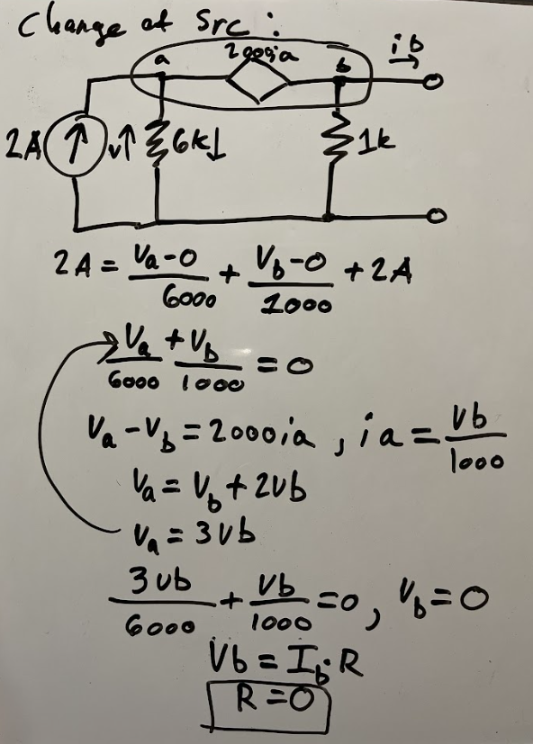

This problem is kind of stupid tbh. You can do a change of source on the 12 volts, and you get a 2A current. in order for ib to be 2 Amps, ia has to be 0. the only way this can happen is if R is 0. I did the supernode analysis after transformation to confirm this.

see 5.4-11 for a better problem